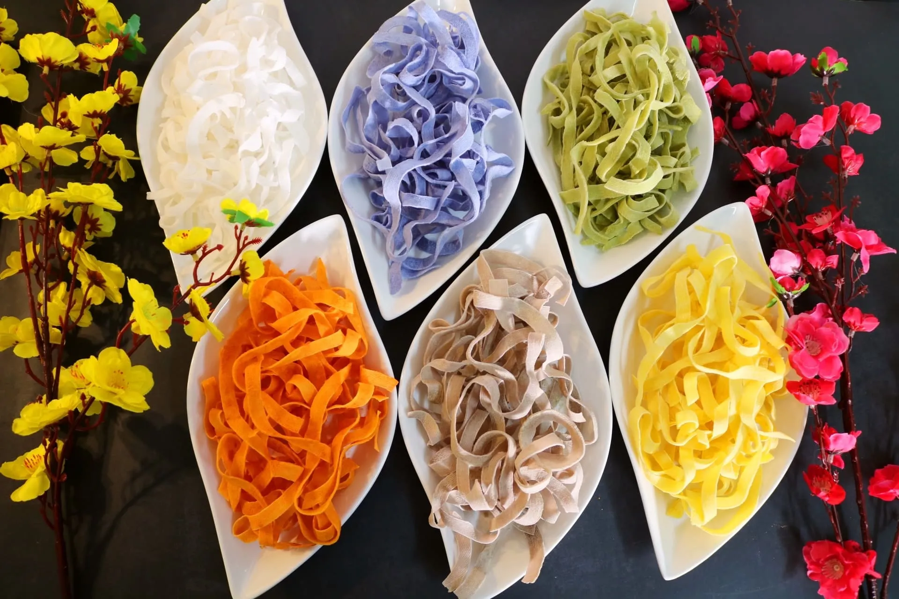
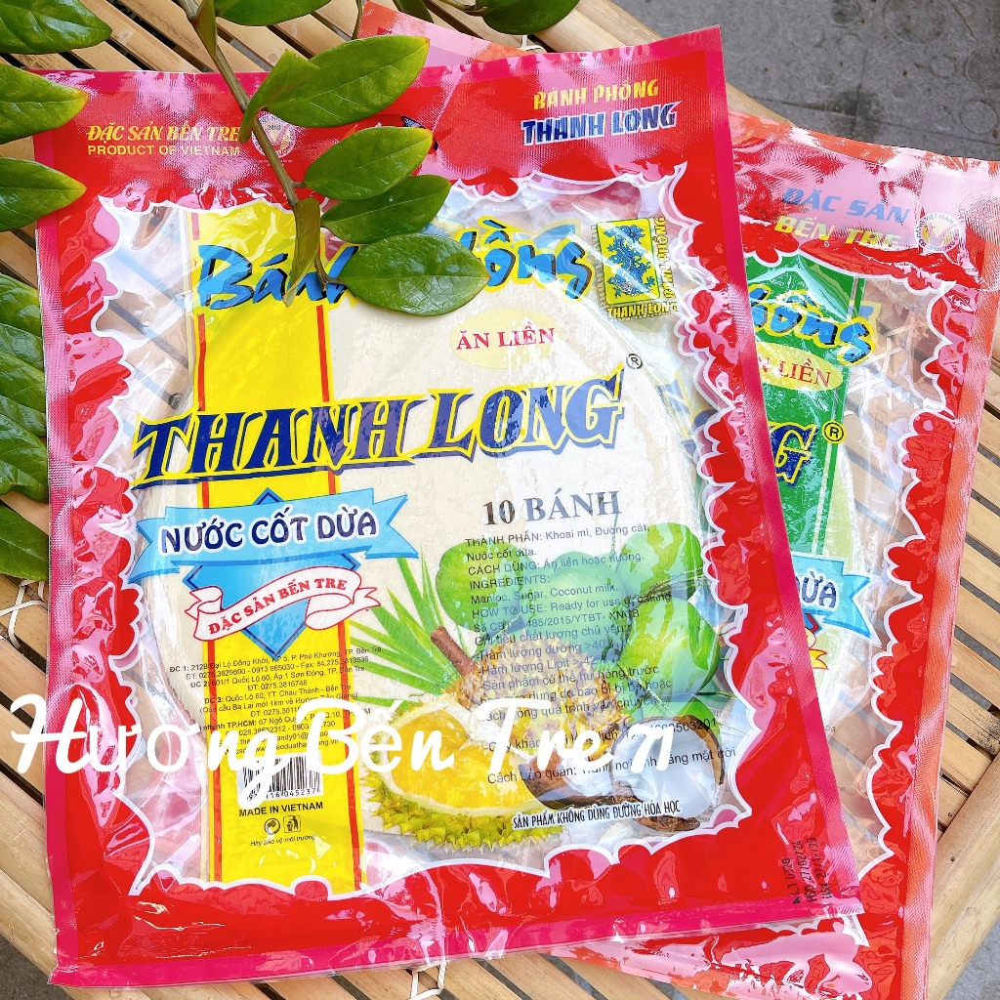

Bánh tét
Món bánh truyền thống tượng trưng cho sự đoàn viên.

Mứt dừa
Đặc sản nổi tiếng Bến Tre, thể hiện vị ngọt của ngày xuân.

Bánh phồng dừa
Món ăn vặt quen thuộc trong khay mứt ngày Tết.

Món bánh truyền thống tượng trưng cho sự đoàn viên.
Đặc sản nổi tiếng Bến Tre, thể hiện vị ngọt của ngày xuân.

Món ăn vặt quen thuộc trong khay mứt ngày Tết.
